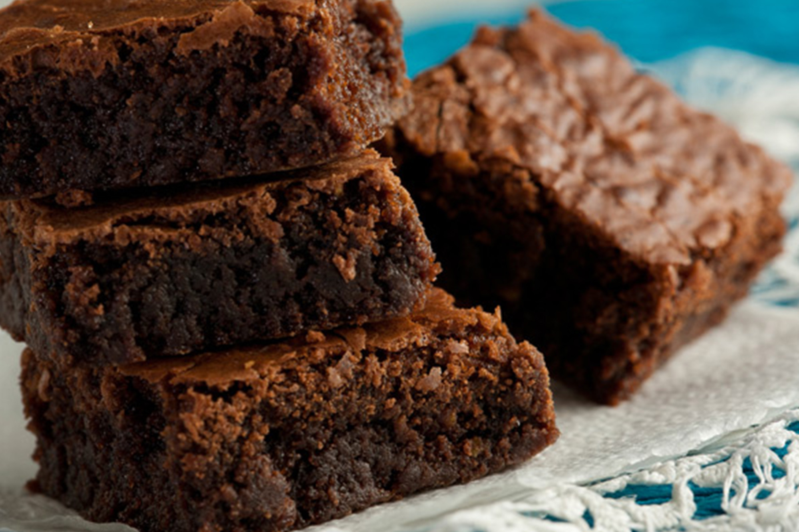

Brownies
Ingredientes:
- 180 gramo/s de chocolate semiamargo
- 100 gramo/s de Manteca
- 180 gramo/s de Azúcar
- 4 Huevos
- 100 gramo/s de Harina
- Cantidad de Nueces
Preparación:
- Fundir el chocolate y la manteca a Baño María.
- Fuera del fuego, incorporar el azucar, los huevos de a 1 y por ultimo el harina.
- Verter un una placa enmantecada y enharinada.
- Espolvorear con la nueces (pueden ser enteras o picadas, a mi gusto quedan mejor enteras).
- Cocinar en horno a 180° C durante 18 minutos aproximadamente.
- Les recomiendo comer caliente con helado de crema americana.